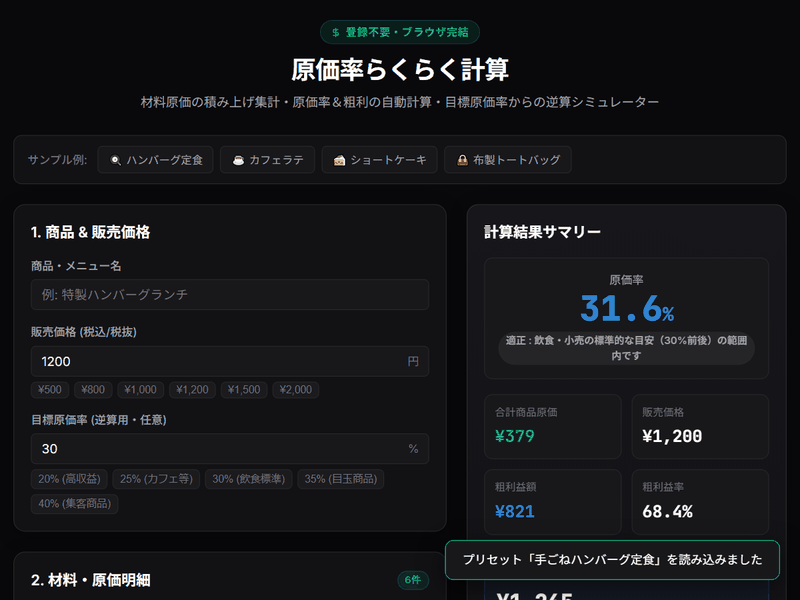

原価率らくらく計算
Cost Rate Calculator

ツールを利用する / コードを見る
こんなときに
商品やメニューの価格を決めるとき、複数の材料から1点あたりの原価を合計し、原価率や粗利を確認したい場面で使います。目標とする原価率から、必要な販売価格を逆算したいときにも使えます。
できること
- 材料ごとの使用量・仕入量・仕入価格から材料原価を計算し、合計商品原価を集計します。
- 重さ（
g/kg）、容量（ml/cc/L）、長さ（m/cm/mm）の単位を自動で換算します。 - 販売価格と合計商品原価から、原価率・粗利益額・粗利益率と目安の判定を表示します。
- 目標原価率（1〜100）と合計商品原価から、必要な販売価格を1円単位で四捨五入して逆算します。
- 4種類のサンプル例（ハンバーグ定食・カフェラテ・ショートケーキ・布製トートバッグ）を呼び出し、計算結果をテキストでコピーできます。
操作デモ

向かないこと・注意
- 個数系の単位（
個・本・枚・パック・袋・食・把・缶）同士の換算（1袋あたりの入り数換算など）には対応していません。 - 金額は1円単位で四捨五入し、率は小数点第1位までで表示するため、実際の会計処理と1円単位の差が出る場合があります。
- 入力内容はブラウザ内の保存領域（LocalStorage）にのみ保存されます。シークレットモード利用時やブラウザのサイトデータ削除時は保存内容が消えます。
- 計算結果は目安であり、無保証で提供されます。入力した原価データは外部へ送信されません。
なぜ作ったか
商品価格を決めるときに発生する、材料原価の積み上げ・原価率と粗利の確認・目標原価率からの販売価格逆算を、1つのブラウザ画面でまとめて計算できるように作りました。汎用的な販売管理や在庫管理の機能は持たせず、価格設定のシミュレーションに必要な計算に絞っています。
開発支援（サポート）
Zero Dev は個人でツールの設計・開発・運営を行っています。ツールが役に立った際のご支援や、活動を応援していただける方は、以下のリンクよりサポートいただけますと幸いです。